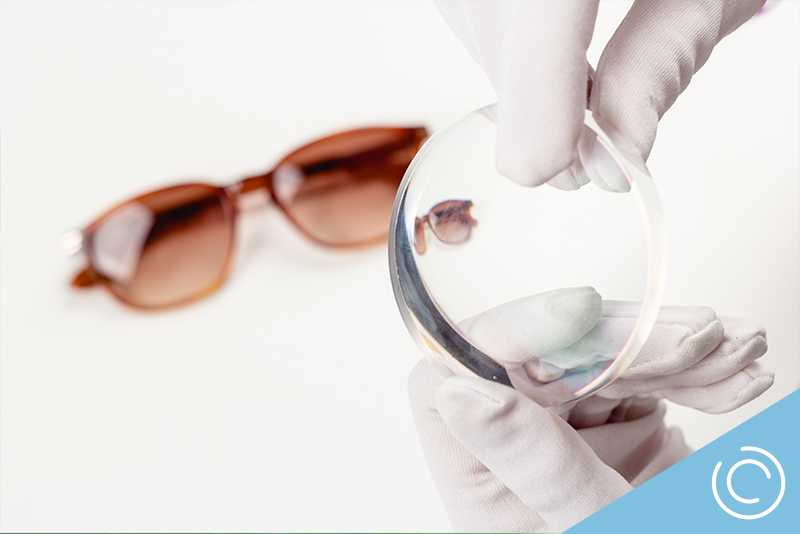
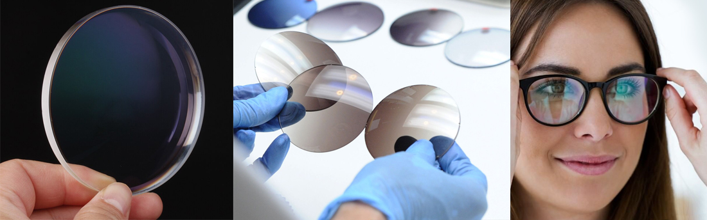

Sabias que ?
- Una lente oftálmica no es más que un medio refractante limitado por dos superficies, transparentes.
- Son capases de desviar los rayos de luz para formar una imagen.
- Los lentes oftálmicos son fabricados en polímeros, especializados que por
- sus propiedades ópticas y físicas son capases de formar imágenes nítidas.
- El índice de refracción o capacidad para refractar o desviar la luz es una de las principales características para clasificar los lentes.
Trivex
- Tiene las ventajas sumadas del CR-39 y del policarbonato (calidad óptica y dureza), eliminado todas las desventajas.
- Características ópticas superiores al policarbonato, es más liviano.
- Mayor resistencia química al contacto con alcohol, acetona y disolventes.
- Índice de refracción medio.
- Resistente a los impactos más fuertes, a los desgarros y al desgaste.
- El material más ligero usado en óptica de precisión.
- Clara, mayor calidad óptica y mejor agudeza visual y mejor protección ocular.
- Ideal para monturas taladradas al aire muy exigentes y de mejor manipulación
- Ideal para la práctica de deportes de acción.
- Personas que trabajan con riesgos laborales por impacto, ofrece 100% de protección de corte (400 Nm) contra los rayos dañinos UV.

Propiedades
- Índice de refracción de 1.530
- Densidad gr/cm
- Número Abbe de 45
- Índice de refracción medio.
- Corte de UV 400 Nm
